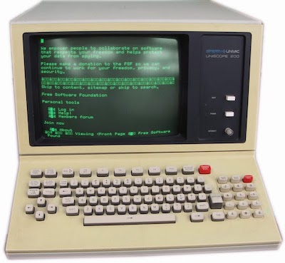
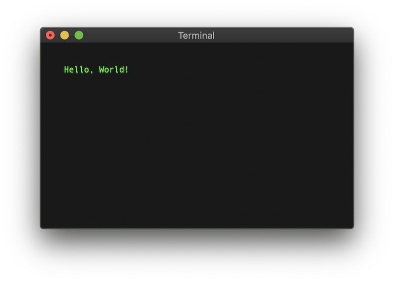

Programas
Programas¶
Para muchos usuarios, un programa es algo que se ejecuta al pulsar sobre un icono en el escritorio del ordenador o en la pantalla de un dispositivo móvil. Pero generalmente todo icono está ligado a un archivo. Si se trata de un documento, el fichero se abrirá y se mostrará en la pantalla. Tratándose de un programa, el archivo es localizado en algún directorio, su contenido copiado a la memoria RAM, y las instrucciones del programa ejecutadas.
Los programas son archivos que contienen instrucciones para que el ordenador sepa lo que tiene que hacer y como hacerlo. Cuando decimos que estamos “instalando” un programa en nuestro equipo, lo que hacemos en realidad es descargar ese fichero de Internet u obtenerlo por otros medios, y copiarlo al disco duro. Una vez instalado, lo podemos ejecutar, por lo cual recibe el nombre de archivo ejecutable.
A la creación de programas se le llama desarrollo de software, y nuestra labor como programadores será escribir las instrucciones que forman cada programa. Tendremos que adaptarnos al formato del sistema operativo al que nos dirigimos, ya que son incompatibles entre ellos. Un programa concebido para Windows, por ejemplo, no funcionará en una tablet Android, y viceversa.
Uno de los sistemas operativos más populares es Windows, creado por Microsoft, y que muchos fabricantes de ordenadores incorporan en sus productos. Otro sistema bastante conocido es Android, presente en multitud de dispositivos móviles. Los ordenadores de la casa Apple tienen sus propio sistema Mac OS.
A nivel corporativo, el sistema operativo utilizado en muchos servidores es el veterano UNIX. Si buscamos un clon de UNIX para ordenadores domésticos, podemos instalar y utilizar alguna de las muchas versiones de Linux.
Ejecutar programas¶
Cada sistema operativo tiene su forma de poner en marcha un programa, pero en líneas generales, cuando pulsamos en el escritorio sobre un icono que represente un programa, sucede lo siguiente:
- Se averigua cual es el archivo ejecutable asociado al icono.
- Se busca ese archivo en el disco. Si no se encuentra, generalmente aparecerá en la pantalla un mensaje de error.
- Se reserva espacio libre en la memoria RAM.
- Se copia el contenido del archivo ejecutable en el espacio de memoria RAM que se ha reservado para el programa.
- Se van tomando las instrucciones del programa de una en una. Para ejecutar cada instrucción, se copia previamente a un registro especial de la CPU, sustituyendo a la instrucción anterior.
- En todo programa ha de haber una instrucción “finalizar ejecución”. Al llegar aquí, el sistema operativo libera el espacio de memoria RAM destinado al programa y lo deja disponible para otros procesos.
Lenguaje máquina¶
¿Que aspecto tienen las instrucciones de un programa? Veámoslo con un ejemplo. Podríamos examinar algún programa vistoso que muestre varias ventanas con imágenes y otros recursos gráficos, pero resulta más práctico examinar algo sencillo. En los libros de programación se encuentra muy extendida la tradición de empezar mostrando la frase ¡Hola, Mundo! en una consola de texto.
Hasta la década de los años ochenta del pasado siglo, las consolas eran pantallas donde la información se mostraba en forma de texto, sin todos esos elementos gráficos a los que estamos acostumbrados en la actualidad:

En muchos sistemas operativos modernos contamos con algún programa llamado Terminal, donde se emula una consola de texto dentro de una ventana:

Como ya hemos apuntado, el formato de instrucciones del programa dependerá del sistema operativo. El fabricante de chips también influye, ya que cada CPU funciona a su manera. Para mostrar la frase “Hola, Mundo” en un ordenador de sobremesa con chips de Intel y sistema operativo Linux, al examinar el contenido del archivo ejecutable, el bloque principal podría ser algo así como:
B801000000BF0100000048BE0000000000000000BA0C0000000F05B83C0000004831FF0F05
Lo que aquí vemos es una representación hexadecimal de los ceros y unos contenidos en el fichero. Un ingeniero de sistemas podría trocear esa secuencia de códigos, identificando cada instrucción por separado:
B801000000
BF01000000
48BE0000000000000000
BA0C000000
0F05
B83C000000
4831FF
0F05
Este formato es conocido como lenguaje máquina. Cada fabricante de chips impone sus códigos, y cada sistema operativo, la forma de utilizarlos. Si queremos crear un programa que funcione en distintas plataformas, tendremos que reescribir las instrucciones para obtener diferentes versiones.